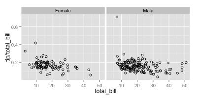

Facets (ggplot2)
This page was recently updated to reflect changes in the new version of ggplot2, 0.9.3. See Installing and using packages to make sure you have the latest version of ggplot2.
Problem
You want to do split up your data by one or more variables and plot the subsets of data together.
Solution
Sample data
We will use the tips dataset from the reshape2 package.
library(reshape2) tips # total_bill tip sex smoker day time size # 16.99 1.01 Female No Sun Dinner 2 # 10.34 1.66 Male No Sun Dinner 3 # 21.01 3.50 Male No Sun Dinner 3 # ... # 22.67 2.00 Male Yes Sat Dinner 2 # 17.82 1.75 Male No Sat Dinner 2 # 18.78 3.00 Female No Thur Dinner 2
This is a scatterplot of the tip percentage by total bill size.
library(ggplot2) sp <- ggplot(tips, aes(x=total_bill, y=tip/total_bill)) + geom_point(shape=1) sp
facet_grid
The data can be split up by one or two variables that vary on the horizontal and/or vertical direction.
This is done by giving a formula to facet_grid(), of the form vertical ~ horizontal.
# Divide by levels of "sex", in the vertical direction sp + facet_grid(sex ~ .) # Divide by levels of "sex", in the horizontal direction sp + facet_grid(. ~ sex) # Divide with "sex" vertical, "day" horizontal sp + facet_grid(sex ~ day)

facet_wrap
Instead of faceting with a variable in the horizontal or vertical direction, facets can be placed next to each other, wrapping with a certain number of columns or rows. The label for each plot will be at the top of the plot.
# Divide by day, going horizontally and wrapping with 2 columns sp + facet_wrap( ~ day, ncol=2)
Modifying facet label appearance
sp + facet_grid(sex ~ day) + theme(strip.text.x = element_text(size=8, angle=75), strip.text.y = element_text(size=12, face="bold"), strip.background = element_rect(colour="red", fill="#CCCCFF"))
Modifying facet label text
Modifying the text of a facet label is somewhat complex. It is necessary to either (A) create a function which maps the original names to the new names, or (B) change the data frame.
To create a function which maps the levels of sex from Female==>Woman, and Male==>Man:
mf_labeller <- function(var, value){ value <- as.character(value) if (var=="sex") { value[value=="Female"] <- "Woman" value[value=="Male"] <- "Man" } return(value) } sp + facet_grid(. ~ sex, labeller=mf_labeller)
To change the data frame:
tips2 <- tips levels(tips2$sex)[levels(tips2$sex)=="Female"] <- "Woman" levels(tips2$sex)[levels(tips2$sex)=="Male"] <- "Man" # total_bill tip sex smoker day time size # 16.99 1.01 Woman No Sun Dinner 2 # 10.34 1.66 Man No Sun Dinner 3 # ... sp2 <- ggplot(tips2, aes(x=total_bill, y=tip/total_bill)) + geom_point(shape=1) sp2 + facet_grid(. ~ sex)
Both of these will give the same result:
Free scales
Normally, the axis scales on each graph are fixed, which means that they have the same size and range. They can be made independent, by setting scales to free, free_x, or free_y.
# A histogram of bill sizes hp <- ggplot(tips, aes(x=total_bill)) + geom_histogram(binwidth=2,colour="white") # Histogram of total_bill, divided by sex and smoker hp + facet_grid(sex ~ smoker) # Same as above, with scales="free_y" hp + facet_grid(sex ~ smoker, scales="free_y") # With panels that have the same scaling, but different range (and therefore different physical sizes) hp + facet_grid(sex ~ smoker, scales="free", space="free")